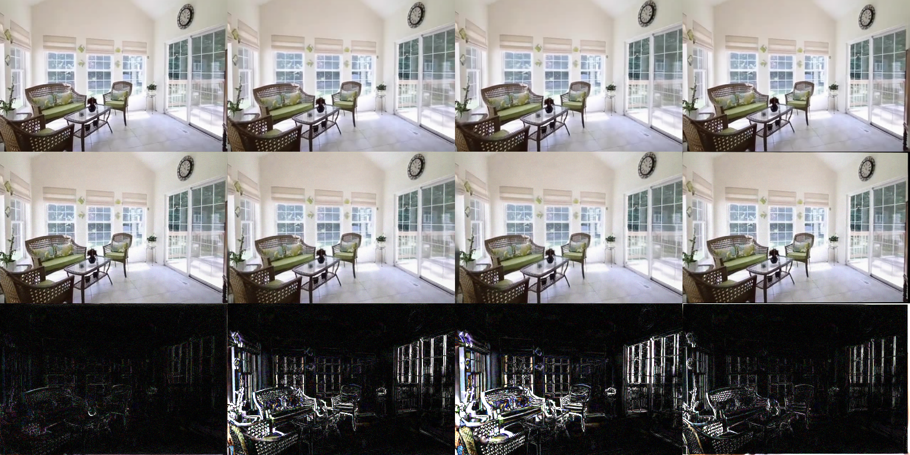
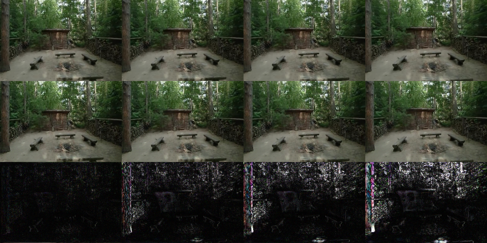

Research one-page · 3D reconstruction security
Depth-Parallax Confusion
研究单图前馈 3D Gaussian Splatting 的结构性攻击面：输入在源视图仍相对接近原结果，但相机移动后，新视角渲染受到更大破坏。
#1. 研究总览
目标：验证单图 3DGS 是否存在“源视图相对稳定、新视角随视差受损”的攻击模式，并评估简单防御能否发现它。
当前结论在仓库保存的 100-scene 主实验中，DPC 的源视图 PSNR 下降 2.62 dB，三个目标视角下降 4.78、5.16、4.97 dB。该证据支持相对 source-camouflage，不支持源视图完全不可察觉。
100
主实验 scenes
−2.62 dB
源视图 PSNR 变化
−4.97 dB
目标视角平均 PSNR 变化
#2. 数据怎么做
实验结果声明使用 RealEstate10K 的 Flash3D MINE present split。攻击只修改单张源图；辅助位姿用于优化，tgt5、tgt10、tgt_rand 用于评估。
仓库只保存机器可读 JSON 和正式定性图，不复制原始帧、Flash3D checkpoint 或第三方缓存。完整说明见 data/README.md。
复现信息缺口缺失：精确 100-scene ID 清单、上游 Flash3D commit、checkpoint SHA256、随机种子与完整环境锁。缺失项不会由目录名推断。
#3. 方法怎么做
DPC 冻结模型权重，只优化满足 L-infinity 预算的输入扰动。目标同时最小化源视图渲染差异，并最大化若干辅助新视角相对干净渲染的差异。
- 用干净源图生成源视图与辅助位姿参考渲染。
- 随机初始化预算球内的扰动。
- 反向传播源视图保护项与新视角破坏项。
- 投影回 epsilon 预算，最终在未参与优化的目标视角评测。
攻击与评估流
优化视角与最终评估视角保持分离
实现入口：dpc_attack.py；评测入口：eval_dpc_flash3d.py。
#4. 如何测试
- CPU 单元测试覆盖攻击目标、黑盒接口、几何指标、区域 mask、迁移和查询预算。
- Flash3D adapter 测试在缺少上游环境时跳过。
- 完整性测试检查五项目录、主结果、实验记录、页面链接和图片 alt。
cd 3d-reconstruction-security
PYTHONDONTWRITEBYTECODE=1 python3 -m pytest code/flash3d-attack/tests -q -p no:cacheprovider完整 GPU 运行方式和依赖边界见 代码说明。
#5. 结果怎么样
同一批 100 scenes 的主结果
| 视角 | Clean PSNR | DPC PSNR | 变化 |
|---|---|---|---|
| source | 37.83 | 35.21 | −2.62 |
| tgt5 | 28.73 | 23.96 | −4.78 |
| tgt10 | 26.44 | 21.28 | −5.16 |
| tgt_rand | 26.35 | 21.38 | −4.97 |
原始结果：DPC、random、naive-PGD；完整记录：DPC 主实验。

qual/ 结果。
实验记录
Epsilon / lambda 消融预算、约束强度与源/目标视角损伤
共享深度先验变化n=40 · 同一几何输入链路
VGGT 迁移（审计未通过）历史 JSON 仅作为失败实验记录保留
训练自由防御n=20 · ROC-AUC 0.555 的负基线
区域损伤分析可见、遮挡与源视锥外区域
证据与状态地图
区分当前可支撑结论、有限证据、无效产物与待补项
#6. 已知失败案例与边界
- 源视图仍下降约 2.6 dB，不是完美隐身。
- 训练自由多视角检测器只有 AUC 0.555；它是失败基线，不代表所有防御无效。
- 遮挡区域分析只有 3 个合格目标帧，不能形成稳定结论。
- VGGT 迁移脚本错误复用了首场景 context，现有 JSON 审计无效；仓库也没有完整 CATSplat 端到端结果。
- 黑盒方法有单元测试和合成验证，但没有完整 Flash3D 大规模结果。
为什么保留负结果避免把当前工作误读成已完成的通用攻击或防御基准。
#7. 下一步
- 补齐场景 manifest、随机种子、上游 commit 与 checkpoint hash。
- 参数化服务器绝对路径并建立可锁定的 GPU 环境。
- 在第二个可完整运行的重建模型上做端到端迁移。
- 为迁移、防御和区域实验补逐场景输出、置信区间和真实可视化。
- 研究专用防御，而不是把 AUC 0.555 的负基线当作最终结论。